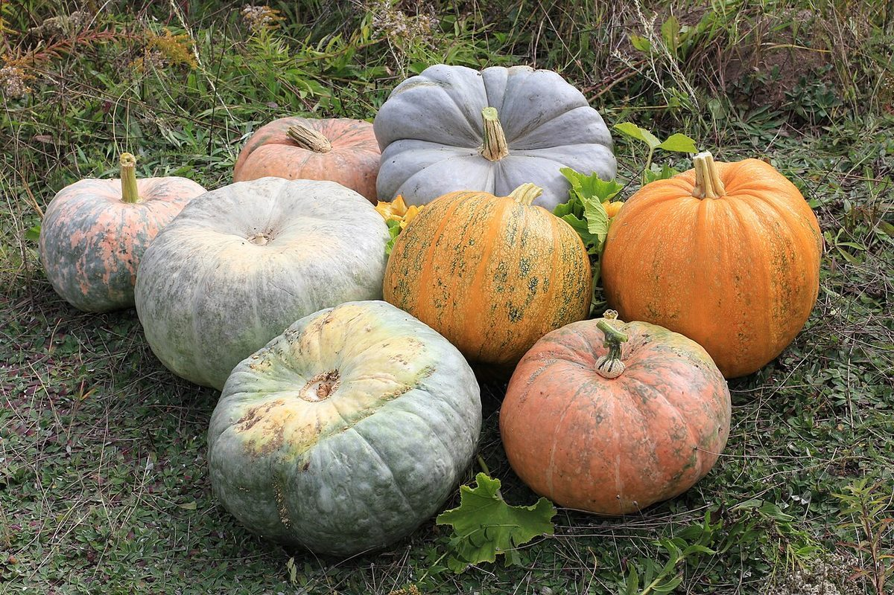
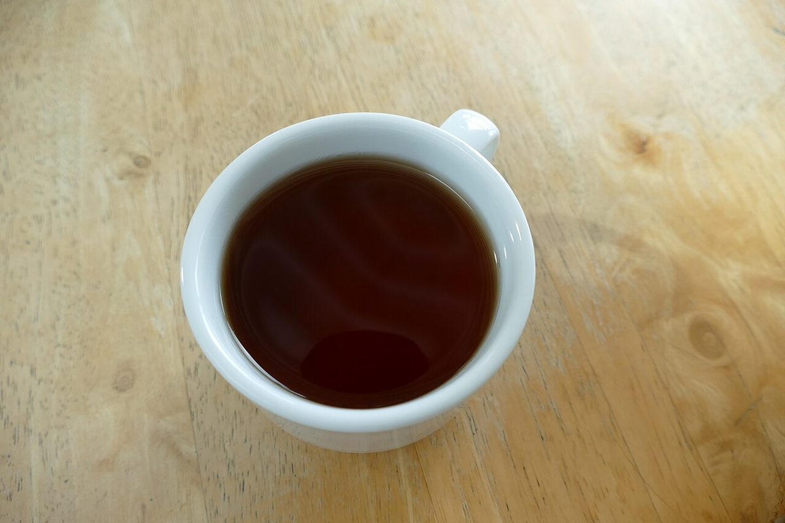
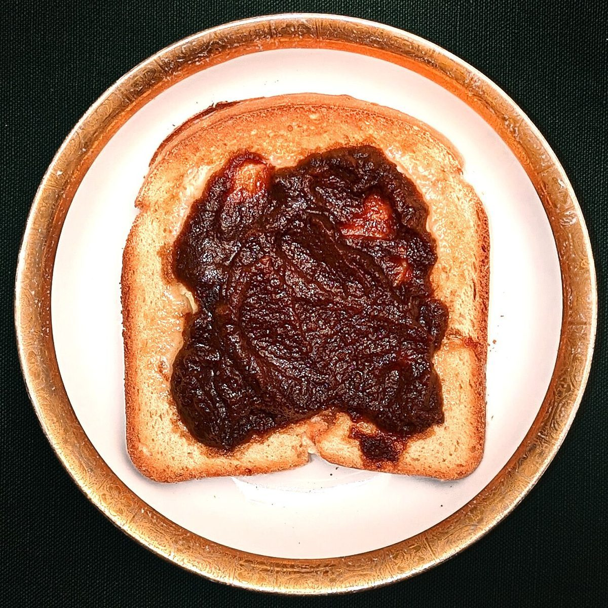

カフェ / 山梨県北杜市大泉町
ポタージュとおやつcafe matoca

中心は10点。ここでは、ひとつの円を、ひとつのページに見立てています。
山梨県北杜市大泉町にあるカフェ「ポタージュとおやつcafe matoca」のご案内ページです。営業時間やメニューなど、詳しいことは準備中。まずはInstagramをのぞいてみてください。
制作側の連想
「まとか」の響きから、的(まと)を思った
店名の由来は分かりません。制作側は「matoca(まとか)」という響きから、弓の的(まと)を連想しました。的は中心から外へ向かって同心円が広がり、輪ごとに点数が決まっています。そこで、お店の名前にある「ポタージュ」の丸いお皿や「おやつ」の小さな丸いお菓子を、的の輪に重ねて眺めることにしました。この見立ては制作側の連想で、お店の理念・由来とは無関係です。
まるいものを、真上から
お皿もカップも、的になる。
下の写真は、まるい器を真上から見たイメージです。国外・撮影地不明のフリー素材で、お店や北杜市のものではありません。





ご案内
お店のこと(確認できたものだけ)
| 所在地 | 〒409-1502 山梨県北杜市大泉町谷戸7751 |
|---|---|
| 電話 | なし |
| 営業時間 | 準備中 |
| 定休日 | 準備中 |
| ご予約 | 準備中 |
| 駐車場 | 準備中 |
| SNS | Instagram @cafematoca |